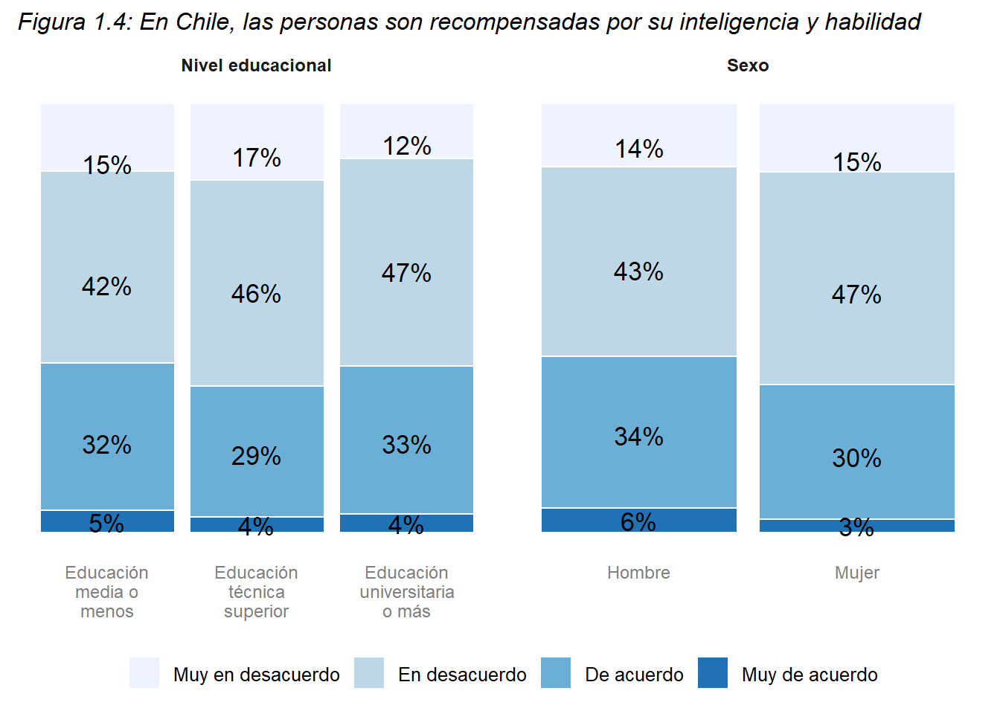
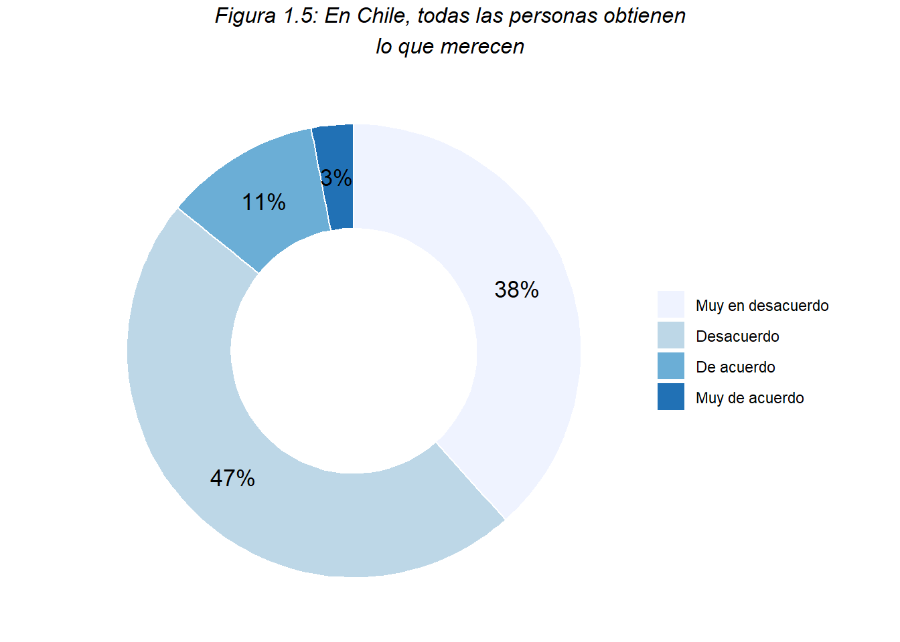
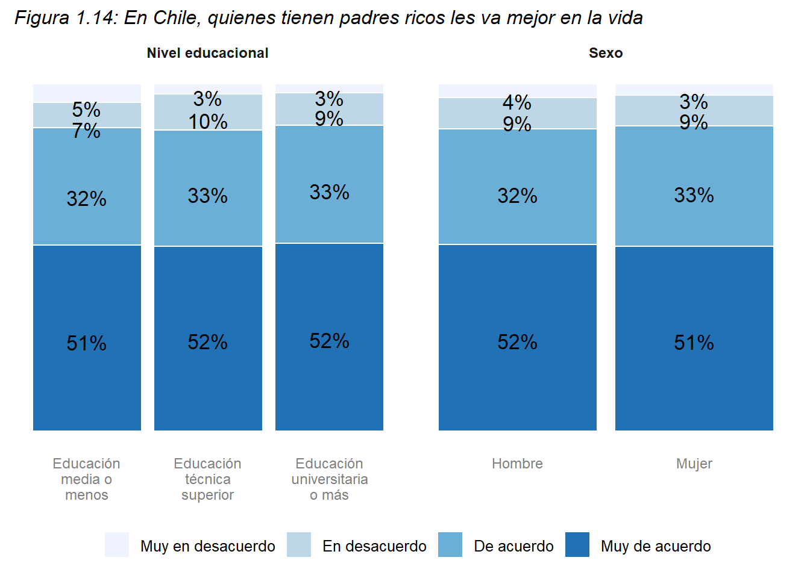
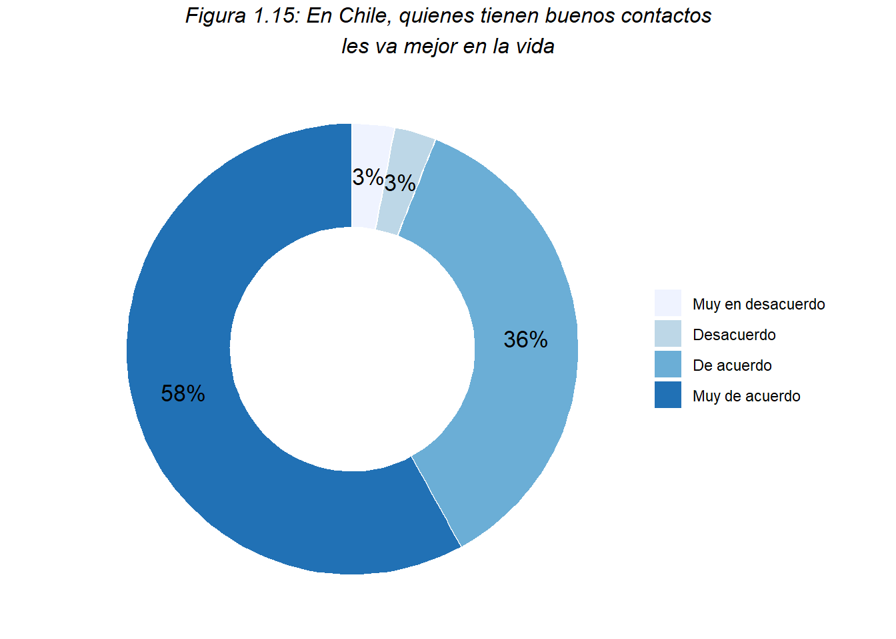
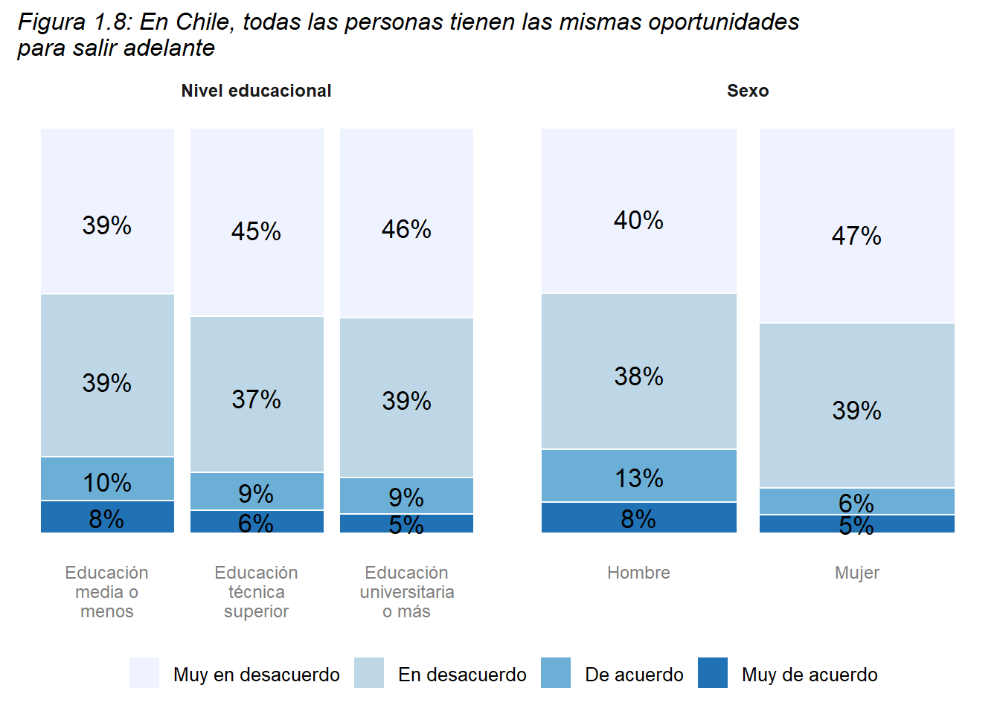
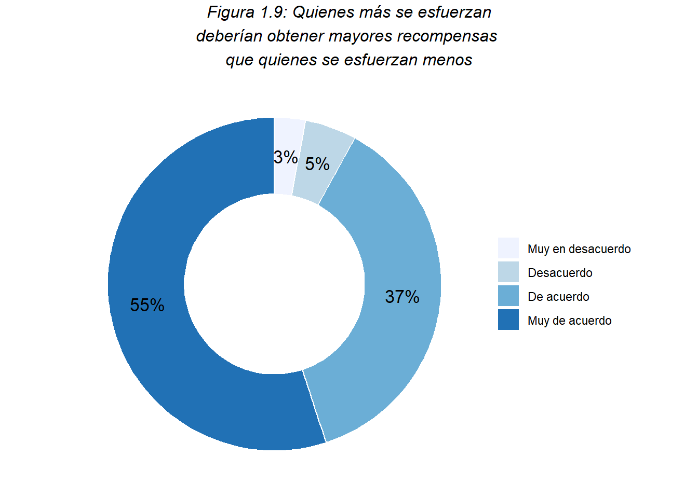
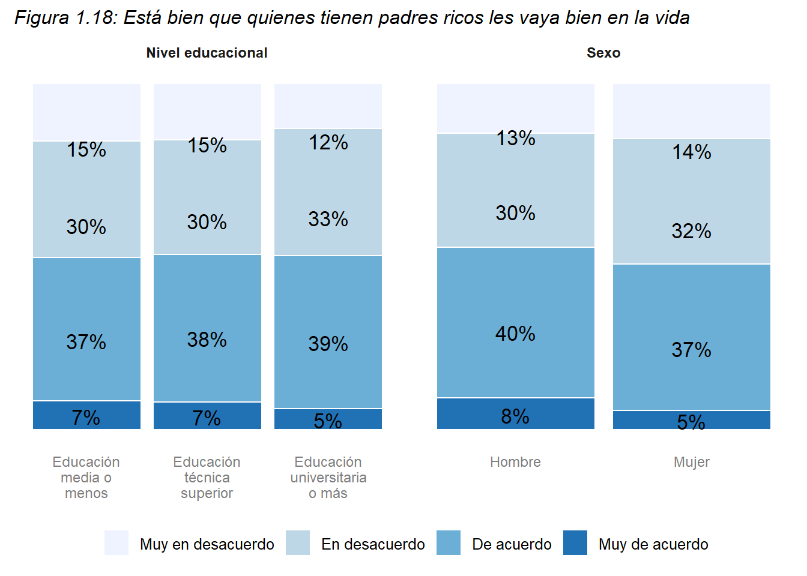

3 Meritocracia
La meritocracia es una idea o un principio que hace alusión a la forma en que serán asignados los recursos dentro de la sociedad. Dicha asignación, se realiza de acuerdo a una compensación ligada al mérito individual. Este último es central para entender la meritocracia, el cual se encuentra compuesto por las nociones de talento y esfuerzo. De ese modo ambos funcionan como criterios de mérito individual.
Así, es posible hablar de un ideal meritocrático, el cual se observa simbólicamente dentro de la sociedad en términos de una ideología (es decir, un conjunto de ideas). Una de las formas en que se socializa esta ideología es a través de la educación. Por ello, este estudio busca observar la forma en que se expresa la meritocracia en la escuela.
Con esa definición en mente, el presente módulo se estructurará en dos apartados: meritocracia en la sociedad y meritocracia en la escuela. Dentro de cada uno se observará operacionalmente la meritocracia a través de las creencias de las/los estudiantes. Asimismo, al interior de dichas creencias es posible distinguir dos tipos: preferencias respecto de lo que debería ocurrir en la sociedad o en la escuela y percepciones de lo que efectivamente ocurre al interior de esos dos espacios.
3.1 Meritocracia en la sociedad
Dentro del espacio más general a nivel de la sociedad, se presentan preguntas que aluden a creencias respecto a lo que sucede (percepciones) o debería suceder (preferencias) en el país.
3.1.1 Creencias en la meritocracia
Esta sección se dividirá en dos grandes creencias: percepciones y preferencias. Al interior de cada una, se describirán preguntas del cuestionario que hacen alusión a criterios de mérito individual, mérito en la sociedad y factores no meritocráticos.
3.1.1.1 Percepciones
- Respecto a criterios de mérito individual
Esfuerzo en la sociedad chilena:
En primer lugar, se observan diferencias entre apoderados y estudiantes. Los apoderados estan en desacuerdo con la frase. Así, los estudiantes parecen estar más de acuerdo con que las personas en el país son recompensadas por sus esfuerzos (52%). Además, si se diferencia a los estudiantes por curso, es posible observar que los estudiantes de educación básica (80%) están más de acuerdo que los estudiantes de educación media (55%).

Cruces con otras características sociodemográficas de estudiantes
Estudiantes con padres que alcanzaron la enseñanza media o menos están de acuerdo en un 54% con la idea de que las personas son recompensadas por sus esfuerzos en la sociedad. Diferenciando por género, mujeres (53%) y hombres (54%) poseen porcentajes similares de acuerdo, a pesar de ello se observa que estudiantes mujeres están mayormente en desacuerdo con la frase (30%) y estudiantes hombres consideran estar muy de acuerdo con la frase en un 18%. Estudiantes que poseen menos de 25 libros en su hogar estan más de acuerdo con que las personas son recompensadas por sus esfuerzos en la sociedad (55%). Sin embargo, estudiantes con más de 25 libros consideran estar muy de acuerdo en un 17% con la frase en comparación con los primeros que lo están en un 14%.
Talento (inteligencia y habilidad) en la sociedad chilena:

Estudiantes se muestran en su mayoría de acuerdo con la afirmación (57%). En cambio, los apoderados si bien tienen un gran porcentaje de acuerdo con el talento, este es un 50%. Por otro lado, estudiantes de enseñanza báscia se muestran más de acuerdo con la idea de que el talento es recompensado en la sociedad con un 76%, considernado que se encuentran un 20% muy de acuerdo y un 56% de acuerdo con la afirmación.

Cruces con otras características sociodemográficas de estudiantes

Estudiantes que tienen padres con estudios superiores se muestran en desacuerdo con la frase en un 23% a diferencia de quienes poseen padres con enseñanza media o menos, quienes estan en desacuerdo en un 17%. En su mayoría, estos últimos se muestran de acuerdo en un 58% con que las personas son recompensadas por su inteligencia y habilidad en la sociedad. Diferenciando por género, estudiantes hombres se muestran más de acuerdo con la frase. Así, estos contestaron estar de acuerdo en un 60% y muy de acuerdo en un 19%. Estudiantes con más de 25 libros en su hogar se muestran de acuerdo en un 60% con la frase. A pesar de eso, estudiantes con menos de 25 libros en su hogar se muestran muy de acuerdo en un 17%.
Respecto al mérito en la sociedad chilena:

Si bien estudiantes y apoderados también se muestran en su mayoría en desacuerdo con que todas las personas obtienen lo que merecen en la sociedad, los estudiantes presentan un 20% de acuerdo con la afirmación. Respecto al curso de estos, específicamente estudiantes de básica contestaron estar de acuerdo en un 24% y muy de acuerdo en un 13%.

Cruces con características sociodemográficas de estudiantes
Estudiantes con padres que tienen estudios superiores estan en desacuerdo en un 50% y muy en desacuerdo en un 26% con que todas las personas obtienen lo que merecen en la sociedad. Diferenciando por género, mujeres están en desacuerdo en un 52% con la frase. Estudiantes con más de 25 libros en su hogar estan muy en desacuerdo en un 26% y en desacuerdo en un 48%.
- Respecto a factores no meritocráticos
Estos factores aluden a externalidades del mérito individual como la herencia, los contactos y la suerte. Por ello, se presentan preguntas referidas a la percepción respecto a los logros individuales de las personas que tienen padres ricos, buenos contactos y mejores oportunidades en la vida.
Padres ricos y logro indiviudal en la sociedad chilena:


Cruces con características sociodemográficas de estudiantes

Buenos contactos y logro individual en la sociedad chilena:


Cruce con características sociodemográficas

Oportunidades y logro individual en la sociedad chilena:
Descripción…..

Cruces con características sociodemográficas de estudiantes

3.1.1.2 Preferencias
- Respecto a criterios de mérito individual
Esfuerzo en la sociedad chilena:


Cruces con características sociodemográficas de estudiantes

Talento en la sociedad chilena:

Cruces con características sociodemográficas de estudiantes

- Preferencia respecto a la recompensa en base al talento por sobre el esfuerzo


Cruces con características sociodemográficas de estudiantes

- Respecto a factores no meritocráticos
Estos factores aluden a externalidades del mérito individual como la herencia, los contactos y la suerte. Por ello, se presentan preguntas referidas a la preferencia respecto a los logros individuales de las personas que tienen padres ricos, buenos contactos.
Padres ricos

Cruces con características sociodemográficas de estudiantes

Buenos contactos


Cruces con características sociodemográficas de estudiantes
3.2 Meritocracia en la escuela
En este módulo se considera otro apartado adicional a las creencias de las/los estudiantes, el que está referido a la experiencia de estas mismas/mismos en sus notas. La forma en que se estudia la meritocracia escolar a partir de la experiencia en la nota se evidencia en la idea de que el mérito de ellas/ellos sea justamente reconocido en la nota obtenida. Por esa razón, dicho apartado se denominará “justicia en las notas”.
De este modo, se presentan dos apartados: creencias en la meritocracia y justicia en las notas.
3.2.1 Creencias en la meritocracia
3.2.1.1 Percepciones
- Respecto a criterios de mérito individual
Esfuerzo en la escuela:


Cruces con características sociodemográficas de estudiantes

Talento en la escuela:


Cruces con características sociodemográficas de estudiantes

Respecto al mérito en la escuela:


Cruces con características sociodemográficas de estudiantes

3.2.1.2 Preferencia
- Respecto a criterios de mérito individual:

Los estudiantes consideran que ambos criterios individuales son importantes para obtener buenas notas en la escuela con un 49%. Particularmente, se observa que un 10% cree que el talento es relevante y el 2% considera que el esfuerzo es importante para la obtención de buenas calficaciones.


3.2.2 Justicia en las notas
En este apartado se observa la percepción de las/los estudiantes respecto a si la nota obtenida recompensa de manera justa su mérito individual. Posteriormente, se presenta de manera comparativa la nota que efectivamente estos recibieron y la preferencia que ellas/ellos tenían de la nota que debieron haber obtenido.
3.2.2.1 Percepciones
a. Respecto a la justicia de la nota obtenida

Los estudiantes


Los estudiantes consideran en un 78% que el promedio obtenido el año pasado es el que merecían, por ende, sus méritos son recompensados en su nota obtenida. Además, contestaron en un 71% que dichas notas son las que estos merecían de acuerdo al tiempo que le dedican a sus estudios, en ese sentido, su esfuerzo se ve recompensado en esa nota.


3.2.2.2 Notas del estudiante
Este apartado hace énfasis en la nota individual de la/el estudiante. De ese modo, se presenta comparativamente la nota final que efectivamente obtuvo y la nota final que consideraba que debería haber obtenido. Además, se realizan cruces para evidenciar como se distribuye la percepción de merecimiento descrita en el apartado anterior a partir de la nota obtenida del estudiante.

En primera instancia, se puede observar que los estudiantes que se sienten subrecompensados con su nota tienden a preferir en mayor medida notas superiores a 5,0. Además, se observa un contraste entre una gran cantidad de estudiantes que preferían una nota 7,0 o cercana a la nota máxima, y quienes obtuvieron efectivamente esa nota. Para los estudiantes que se sintieron sobrerecompensados, se observa un contraste entre la nota obtenida y la nota que creen merecer en torno a las notas cercanas al 4,0 y 5,0. Así, estos estudiantes obtuvieron en mayor medida notas entre 6,0 y menor a 7,0, creyendo merecer notas entre el 4.0 y el 6,0.